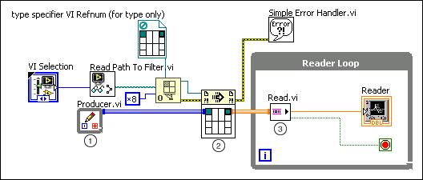

Connecting Dynamically with Call By Reference Nodes
Channel wires not only express static connections between parallel sections of code, they also express dynamic connections when working with Call By Reference nodes. The following illustration demonstrates dynamically connecting channel wires with Call By Reference nodes.

The following list describes important details about the previous diagram:
In the Writer Loop, create a writer endpoint by right-clicking a control or a constant and selecting Create�Channel Writer from the shortcut menu. This example uses the Stream template to create a Write endpoint. You also can choose from other writer endpoints of other channel templates.
Tip��To replace an existing endpoint on the block diagram with another, right-click the endpoint and select Replace�Channel Endpoint.
The Call By Reference node calls the VI you specified in the VI Selection control.
The reader endpoint reads data from the channel.
Note��The channel wire that connects the writer endpoint and the Call By Reference node and the channel wire that connects the Call By Reference node and the reader endpoint have different colors. This is because channel wires display the color of the transmission data type, not the color of the data pattern.